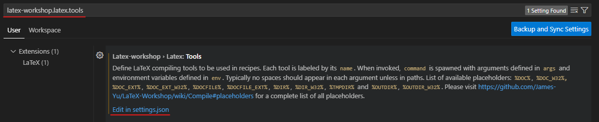

vscode配置latex workshop后，无法使用xelatex编译的解决方案
本人环境配置：
TexLive 2024
Latex Workshop v9.20.1
vscode 1.84.2
设备名称 DESKTOP-T1QIM41
处理器 11th Gen Intel(R) Core(TM) i5-1135G7 @ 2.40GHz 2.42 GHz
机带 RAM 16.0 GB (15.6 GB 可用)
系统类型 64 位操作系统, 基于 x64 的处理器
笔和触控 没有可用于此显示器的笔或触控输入
windows规格：
版本 Windows 10 企业版
版本号 22H2
安装日期 2023/9/28
操作系统内部版本 19045.3448
体验 Windows Feature Experience Pack 1000.19044.1000.0
1. 添加编译链
安装完vscode的latex
workshop和texlive后，默认的编译链只有pdflatex -> bibtex -> pdflatex * 2，该配置项在latex-workshop.latex.recipes中。我照猫画虎弄了一个xelatex -> bibtex -> xelatex * 2，配置项如下：
1
2
3
4
5
6
7
8
9
10{
"name": "xelatex -> bibtex -> xelatex * 2",
"tools": [
"xelatex",
"bibtex",
"xelatex",
"xelatex"
]
}
2. 添加/修改编译工具配置
但是会报错，说什么Does the executable
exist?但是本人在cmd中是可以执行xelatex命令的，经过一番研究发现，原来是需要在latex-workshop.latex.tools中配置xelatex对应执行的命令，也就是上面的tools中的xelatex没有定义。因此，在latex-workshop.latex.tools中添加一项：
1
2
3
4
5
6
7
8
9
10
11{
"name": "xelatex",
"command": "xelatex",
"args": [
"-synctex=1",
"-interaction=nonstopmode",
"-file-line-error",
"%DOC%"
],
"env": {}
}
然后还需要修改： 1
2
3
4
5
6
7
8
9
10
11
12
13
14{
"name": "latexmk",
"command": "latexmk",
"args": [
"-xelatex",
"-synctex=1",
"-interaction=nonstopmode",
"-file-line-error",
"-pdf",
"-outdir=%OUTDIR%",
"%DOC%"
],
"env": {}
}
在参数中添加了"-xelatex"。
如此炮制完成后便OK了。
如何修改？
按下打开vscode
settings，搜索对应的配置项ID，即latex-workshop.latex.recipes和latex-workshop.latex.tools，点击Edit in settings.json即可。

最后，附上一份可以正常使用的settings.json文件片段：
点击查看代码
1 | |